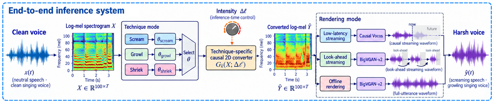
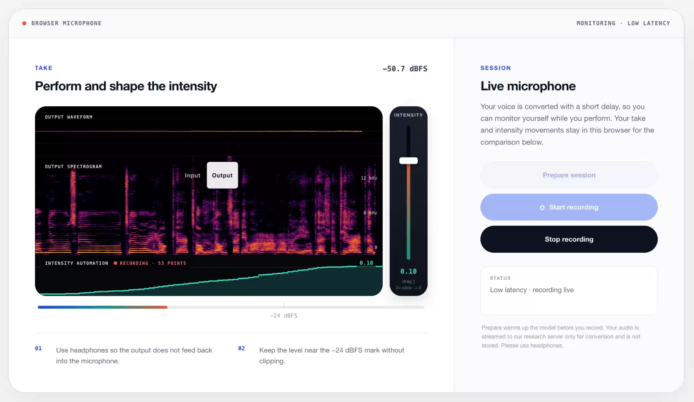

ISMIR 2026 · Late-Breaking Demo
DISTORTER
A real-time, input-preserving harsh-voice effect for speech and singing. It turns a clean take into a scream, growl, or shriek without replacing your voice — the melody, words, and timing stay yours, and one fader controls how far the harshness goes.
How it works
A causal mel-to-mel converter is trained separately for each technique on unpaired recordings under the CycleGAN paradigm. Motivated by reports that supraglottic vibration and turbulence can accompany vocal-fold phonation, it does not estimate those anatomical sources: it adds an effective spectral residual around the retained harmonic structure, then rescales every frame back to the input's level. An inference-time bias on that residual is what the intensity fader moves.

Low latency
A causal decoder streams while you perform, at 42.67 ms of algorithmic latency.
Look-ahead
BigVGAN-v2 in overlapping chunks with bounded future context, about half a second behind.
Offline
The complete take rendered after the fact, replaying the intensity curve you moved live.
Audio examples
Three inputs of different character, each through all three technique-targeted modes, and one of them swept across the intensity range. Rendered offline with BigVGAN-v2.
One input, three modes
| Input | Scream | Growl | Shriek |
|---|---|---|---|
|
clear voice by a metal singer EMVD, CC BY 4.0 |
|||
|
spoken VocalSet, CC BY 4.0 |
|||
|
sung in Italian VocalSet, CC BY 4.0 |
The VocalSet speakers took part in neither training nor checkpoint selection. The EMVD singer was not trained on either, but is one of the three whose recordings drove checkpoint selection.
The intensity control
A metal singer's high-register take through the scream mode at five offsets, with the input for reference. The fader changes how far the residual dominates, not how loud the take is: every frame is rescaled to the input's level.
| Input | −3 nats | −1 | 0 | +0.75 | +1.5 |
|---|---|---|---|---|---|
|
EMVD, CC BY 4.0 |
Live demo
An interactive browser demo streams your microphone to the converter and plays the result back while you perform. It runs on a single research GPU and admits two sessions at a time, so if it is busy please try again shortly. A session lasts up to five minutes.

Use headphones: speaker playback feeds back into the microphone and gets converted again. Your audio is used only for the conversion and is not stored on the server.
Paper
Distorter: A Real-Time Input-Preserving Harsh-Voice Effect for Speech and Singing. Beomjin Park, Seoul National University. Late-Breaking/Demo, International Society for Music Information Retrieval Conference, 2026.
@inproceedings{park2026distorter,
author = {Beomjin Park},
title = {Distorter: A Real-Time Input-Preserving Harsh-Voice Effect
for Speech and Singing},
booktitle = {Extended Abstracts for the Late-Breaking/Demo Session of the
Int. Society for Music Information Retrieval Conf. (ISMIR)},
year = {2026}
}